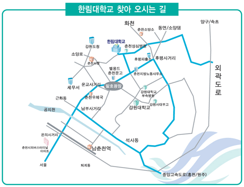

한국정보과학회 프로그래밍언어연구회 겨울학교
(SIGPL Winter School 2009)
|
주제: 정형기법과 정확한 프로그래밍언어 및 소프트웨어 개발
일시: 2009년 2월9일(월)~2월11일(수)
장소: 한림대학교 퇴계관 강당 (16309호)
|
|---|
한국정보과학회 프로그래밍언어 연구회(SIGPL)는 매년 여름과 겨울 방학기간에 대학원생과 엔지니어, 교수, 연구자들을 대상으로 계절학교를 개최하고 있습니다. 올해에는 정확한 프로그래밍언어 및 소프트웨어 개발의 핵심인 정형기법(Formal Methods)에 관련된 기초 강의와 최신 연구 강의를 마련하였습니다. 현재 국내 정형기법 분야의 연구를 주도하시는 교수님들의 강의가 예정되어 있습니다. 많은 관심과 참여를 부탁드립니다.
한국정보과학회 프로그래밍언어연구회 운영위원장 변석우
프로그램
| 2/9(월) | 발표자 | 좌장 |
|---|
|
1:00-1:30 | 등록 | |
1:30-2:45 | 업데이트 기록에 기반한 상향방식 포인터 분석 | 강현구 박사 (KAIST) | |
3:00-4:15 | 정형기법 소개 | 최진영 교수 (고려대) | | |
4:30-5:30 | 초청 강연 | 김종헌 대표 (Peace of Mind) | | 2/10(화) | 발표자 | 좌장 |
|---|
|
9:00-10:15 | 모델검증과 요구분석 | 최윤자 교수 (경북대) | | |
10:30-11:45 | SAT & Bounded Model Checking | 권기현 교수 (경기대) | |
1:00-2:15 | 컴파일러 실습용 도구, 그 다양한 시도들: 가상 기계, Lego Mindstorm, Eclipse | 이수현 교수 (창원대) | |
3:00- | 견학 프로그램 | |
6:00- | 저녁 만찬 | | 2/11(수) | 발표자 | 좌장 |
|---|
|
9:00-10:15 | 증명보조기 Coq 소개 | 박성우 교수 (Postech) | |
10:30-11:45 | 자동차 전장용 임베디드 소프트웨어 플랫폼 | 조정훈 (경북대)
| |
등록안내
- 등록비
| | 학생회원 | 일반회원 | 비회원 |
|---|
| 등록비 | 150,000원 | 200,000원 | 250,000원 |
|---|
- 등록 방법: 2월 7일까지 등록페이지를 통하여 등록
준비위원회
- 학술위원장: 창병모 교수 (숙명여자대학교)
- 조직위원장: 방기석 교수 (한림대학교)
- 후원: 한림대학교 정보전자공과대학 컴퓨터공학과
- 문의: 방기석 교수 (한림대학교, 017-399-1648,
 )
)
안준선 교수 (한국항공대학교, 017-208-5593,  )
)

- 서울·경기 지역에서 오시는 길
- 자가용을 이용할 경우 경춘국도를 타고 약 3km정도 가면 도농삼거리가 나오는데 거기서
금곡, 마석, 춘천방향으로 좌회전한 후 그 길 따라 약 1시간 30분 정도 오면 춘천입니다.
지도의 빨간색 도로를 따라 오면 됩니다.
- 시외버스를 이용할 경우 구의동 동서울터미널(지하철 2호선 강변역 앞)이나 상봉터미널
에서 춘천행 버스를 타시면 됩니다. 첫차는 5시 30분에 있으며, 배차간격은 10분~15분
입니다. 1시간 30분에서 1시간 45분 정도 소요됩니다.
김포공항에서도 춘천까지 운행하는 시외버스가 있습니다. 버스터미널에서 대중교통을
이용해서 한림대학교에 오시면 됩니다.
- 기차편을 이용하시는 경우 청량리역이나 성북역에서 경춘선을 타시고 종착역인 남춘천역
에서 내리시면 됩니다. 기차의 종류는 무궁화호와 통일호이며, 청량리역에서 5시 25분에
첫차가 출발합니다. 소요시간은 1시간 50분에서 2시간 정도 걸립니다. 남춘천역에서 셔틀
버스 및 대중교통을 이용해 오시면 됩니다.
-
서울·경기 이외의 지역에서 오시는 길
- 기차를 이용하시려면 일단 청량리역에
와서 경춘선을 이용해야 합니다. 남춘천역에 하차하여 셔틀버스 및 대중교통을 이용하십시오.
-
자가용을 이용하시는 경우 경부고속도로 및
중부고속도로를 이용하여 경춘국도로 진입하십시오. 대구에서 시작하는 중앙고속도로를
이용하시면 춘천에 바로 오실 수 있습니다. 부산, 포항 등 동해안 지역에서는 국도를
이용하셔도 됩니다.
- 경기도와 충청북도에서는 도내 많은 지역에서 춘천행 시외버스를 이용하실 수 있습니다.
경상도에서는 부산, 울산, 경주, 대구, 포항 등지에서, 충청남도에서는 대전, 천안에서
춘천행 시외버스를 타시면 됩니다. 전라북도에서는 전주에서 시외버스가 출발하며, 전라
남도에서는 춘천으로 가는 시외버스가 운행되지 않습니다. 춘천시외버스터미널에서 기타
대중교통을 이용하면 10분 정도의 시간이 소요됩니다.